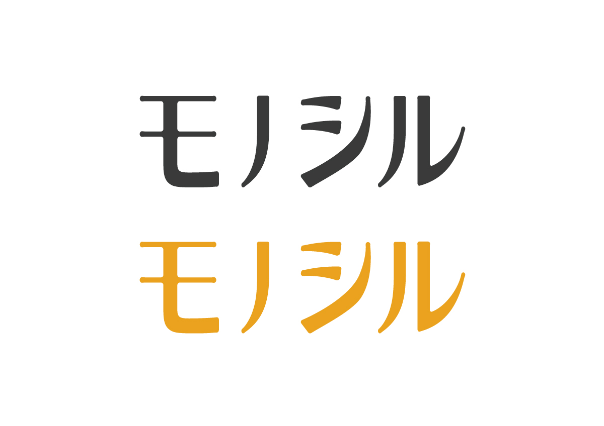

monocil Logo
プロジェクト概要
株式会社くるみ様が、運営しているWEBメディア"モノシル"にてロゴを作成することとなり、一般的に募集をかけていらっしゃいました。今回はそちらの募集に応募したので、該当の応募作品をプロジェクト内容とさせていただきます。
プロジェクト詳細
◆要望(デザインの雰囲気,規定など)
●高級感をだすというよりは、馴染みがある感じが良い。
●文字ロゴを希望（プラスでアイコンをつけるのは歓迎)。
● 色は、サービスのイメージカラー#eaa21eに合わせるか、メルカリの色を使って欲しい。
●文字ロゴを希望（プラスでアイコンをつけるのは歓迎)。
● 色は、サービスのイメージカラー#eaa21eに合わせるか、メルカリの色を使って欲しい。
アウトプット
